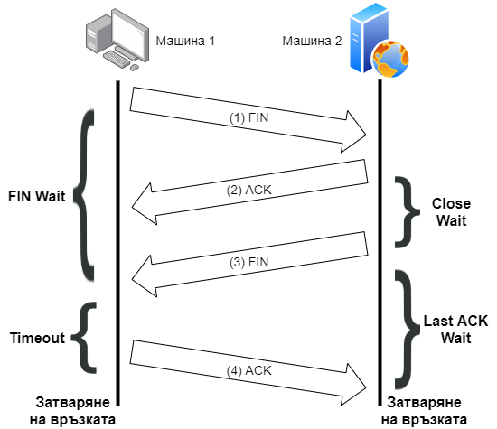

Прекъсване на връзка
Прекратяването на връзка между две страни следва подобен, но по-сложен, подход от установяването й. Това е поради факта, че двете страни трябва успешно да освободят ресурси. Стандартният начин за прекратяване е чрез двойка FIN пакети.
- Машина 1 изпраща FIN пакет към Машина 2 (възможно е да бъдат изпратени и данни) и чака да получи FIN пакет. Времето, през което чака, се нарича FIN WAIT. През това време е възможно да започне освобождаването на ресурси.
- Машина 2 получава FIN пакета и връща веднага ACK пакет. Започва да освобождава ресурси и при приключване изпраща също FIN пакет към Машина 1. Това време се нарича Close Wait.
- След като Машина 2 изпрати своя FIN пакет, чака да получи ACK пакет от Машина 1 – Last Ack Wait.
- Машина 1 получава FIN пакета и изпраща ACK пакет обратно. Вече може да освободи всички оставащи ресурси, но трябва да изчака още (определен timeout), защото има вероятност да се наложи да изпрати ACK пакета повторно.
- Машина 2 получава ACK пакета и окончателно може да терминира връзката.

Бележка
По време на Close Wait Машина 1 е прекратила само изпращането, но не и получаването на данни. Трансфера на информация от Машина 2 към Машина 1 се поддържа докато и двете страни не изпратят FIN пакет.

Фиг. 1 Прекъсване на връзка при TCP.